vignettes/case_study_triangle_area.Rmd
case_study_triangle_area.Rmd## Loading required package: usethis
devtools::load_all("../")## ℹ Loading brassens
ts <- as.POSIXct("2021-07-22 00:00:00", tz = "UTC")
te <- as.POSIXct("2021-07-23 23:59:59", tz = "UTC")
timestamp <- as.POSIXct("2021-07-23 06:00:00", tz = "America/New_York")
imp <- terra::rast("../case_study_triangle/imp_triangle.tif") |>
terra::project("EPSG:4326")
cws_raw <- readRDS(paste0(
"../case_study_triangle/cws_triangle_raw_",
lubridate::date(ts),
"_",
lubridate::date(te),
".rds"
))
cws_qc <- readRDS(paste0(
"../case_study_triangle/cws_triangle_cleaned_",
lubridate::date(ts),
"_",
lubridate::date(te),
".rds"
))
cws_final <- readRDS(paste0(
"../case_study_triangle/cws_triangle_cleaned_calibrated_",
lubridate::date(ts),
"_",
lubridate::date(te),
".rds"
))
timeseries(cws_raw, ts = ts, te = te, var = temp)## Warning: Removed 560 rows containing missing values or values outside the scale range
## (`geom_line()`).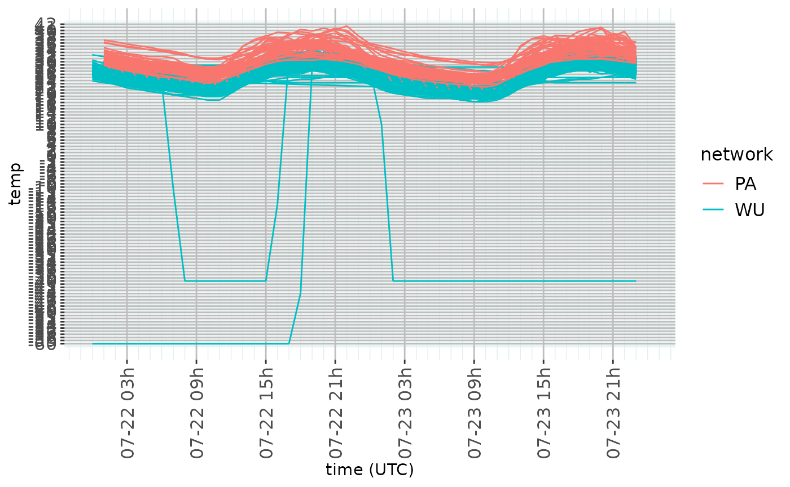
timeseries(cws_qc, ts = ts, te = te, var = temp)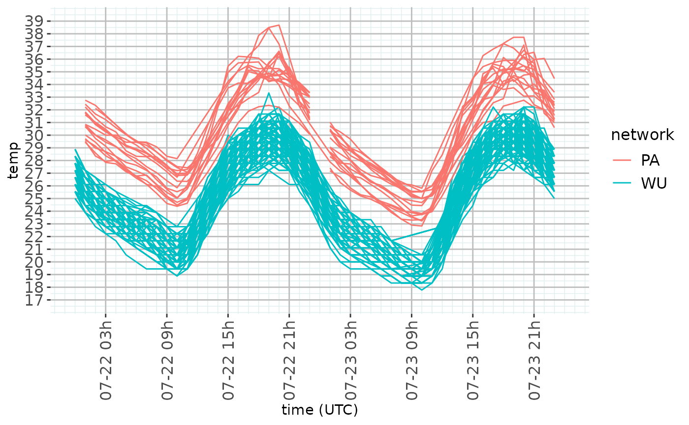
timeseries(cws_final, ts = ts, te = te, var = temp)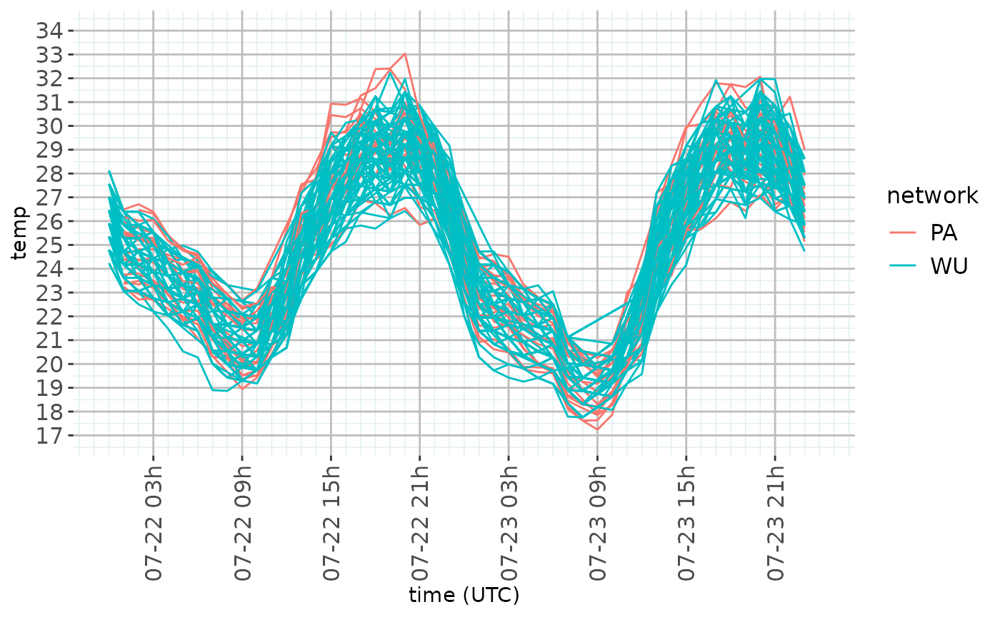
hourly_boxplot(cws_raw, ts = ts, te = te, temp)## Warning: Removed 632 rows containing non-finite outside the scale range
## (`stat_boxplot()`).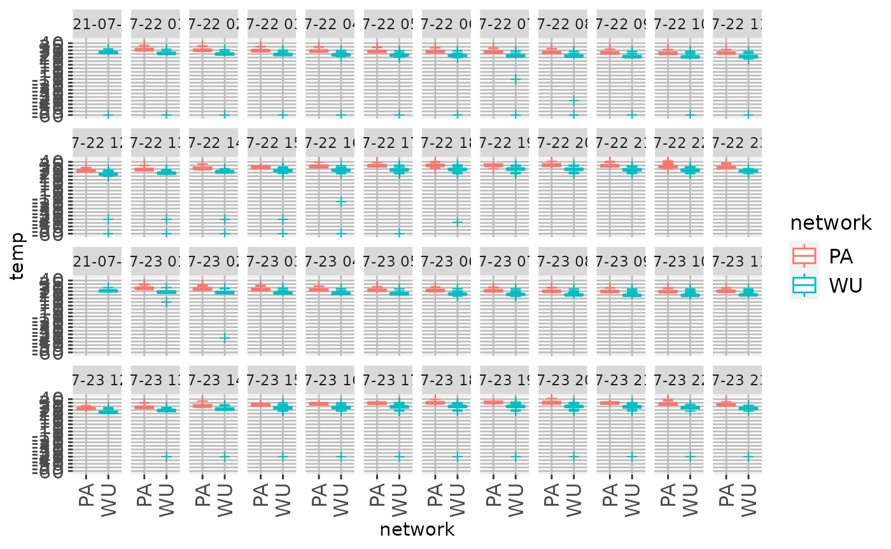
hourly_boxplot(cws_qc, ts = ts, te = te, temp)## Warning: Removed 19 rows containing non-finite outside the scale range
## (`stat_boxplot()`).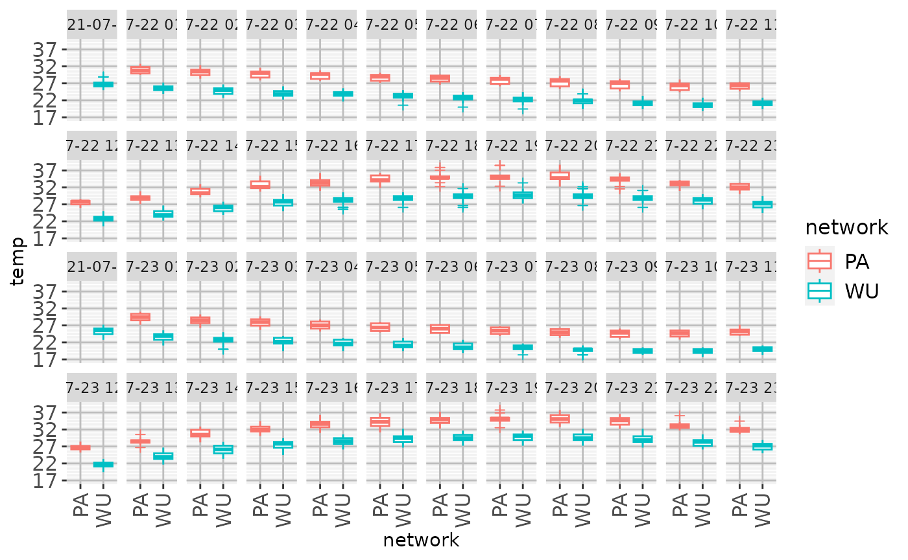
hourly_boxplot(cws_final, ts = ts, te = te, temp)## Warning: Removed 4 rows containing non-finite outside the scale range
## (`stat_boxplot()`).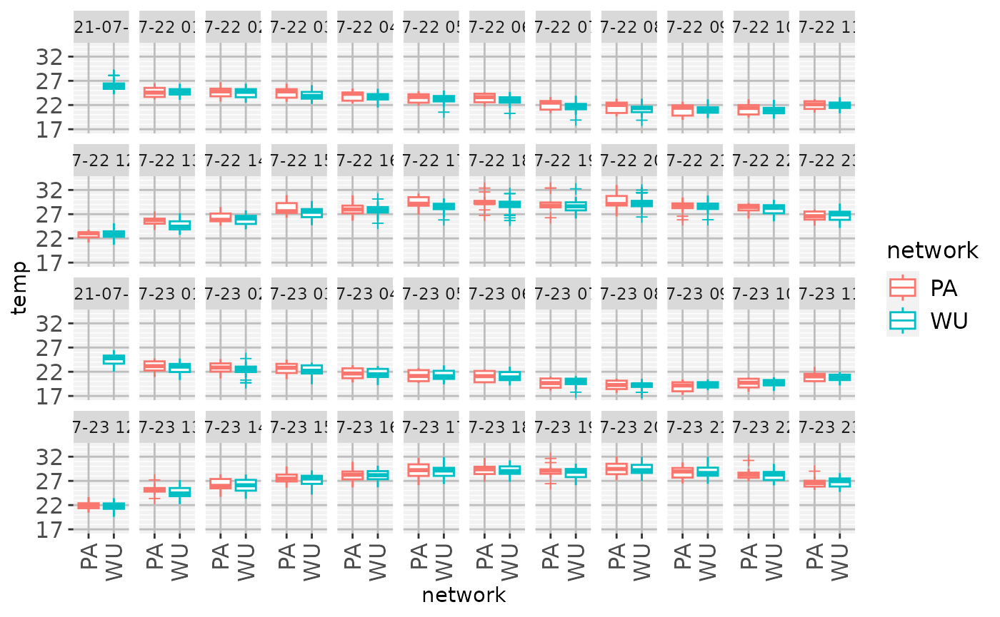
tile_ts(cws_raw, ts = ts, te = te, var = temp)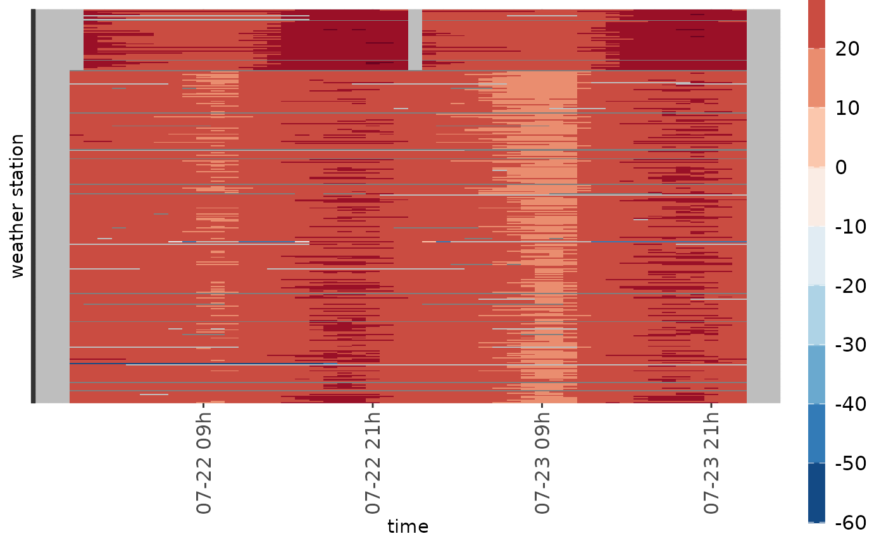
tile_ts(cws_qc, ts = ts, te = te, var = temp)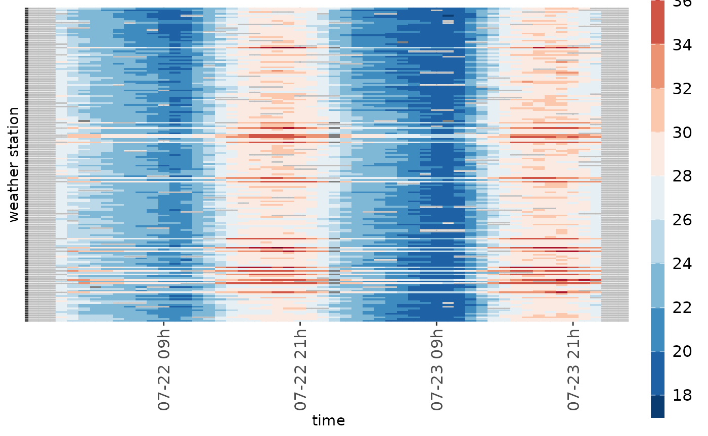
tile_ts(cws_final, ts = ts, te = te, var = temp)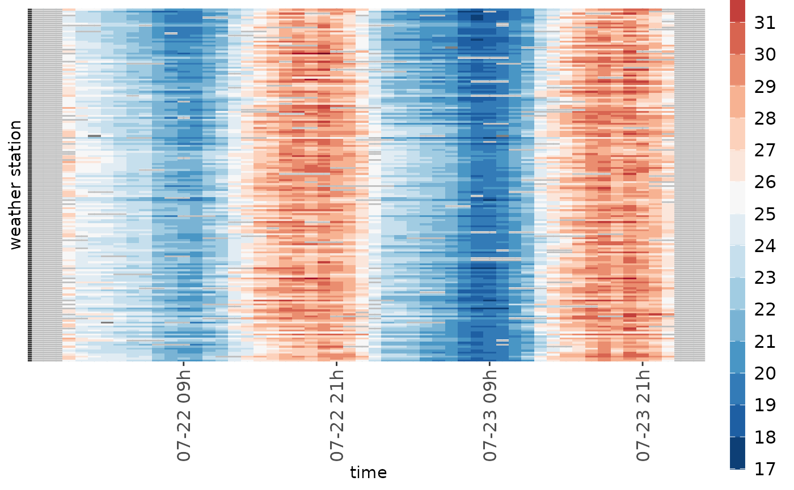
map_stations(cws_raw, timestamp, var = temp, imp, title = "Raw data")## <SpatRaster> resampled to 501000 cells.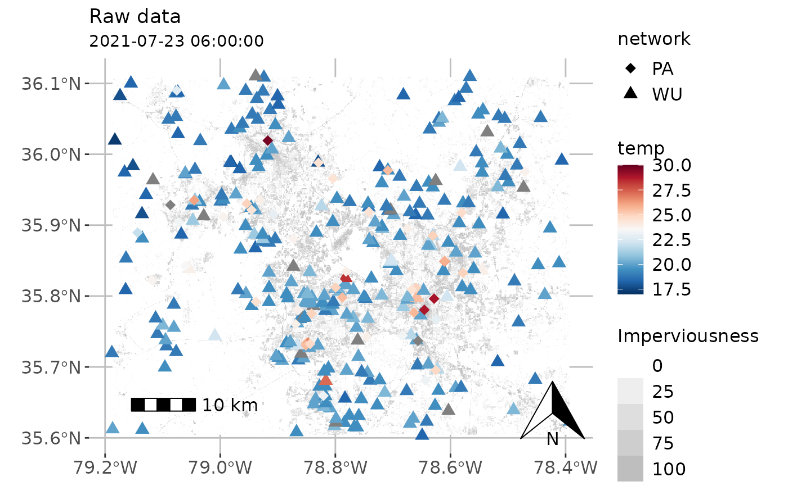
map_stations(
cws_qc,
timestamp,
var = temp,
imp,
title = "Cleaned with CrowdQC+"
)## <SpatRaster> resampled to 501000 cells.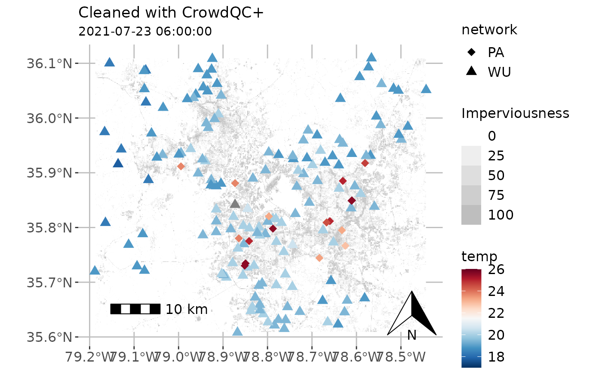
map_stations(
cws_final,
timestamp,
var = temp,
imp,
title = "Cleaned with CrowdQC+ and calibrated with GHCNh"
)## <SpatRaster> resampled to 501000 cells.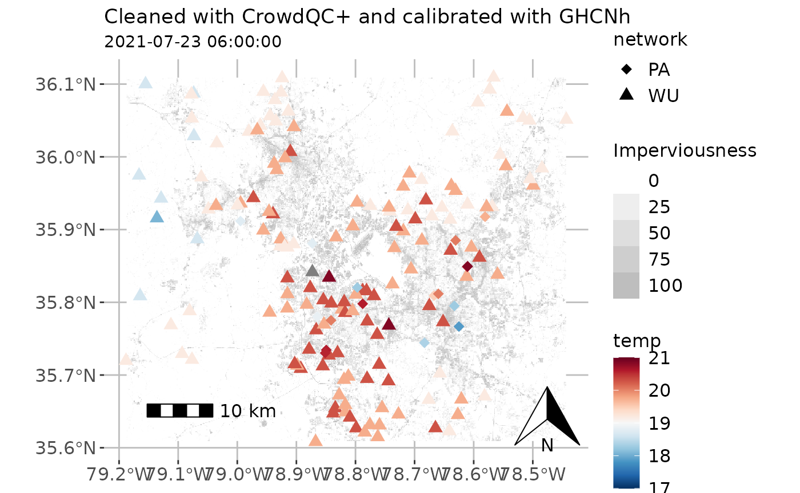